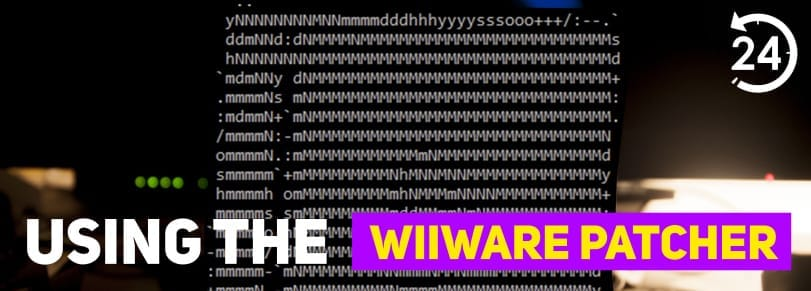
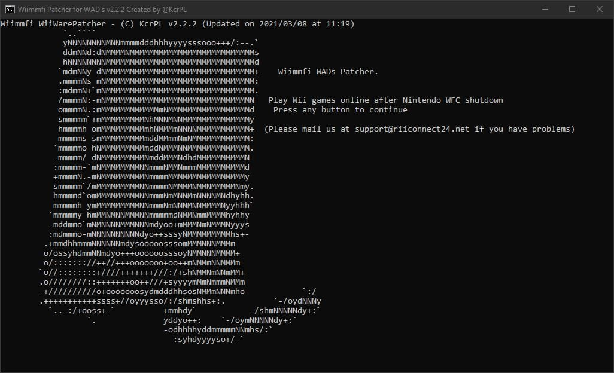
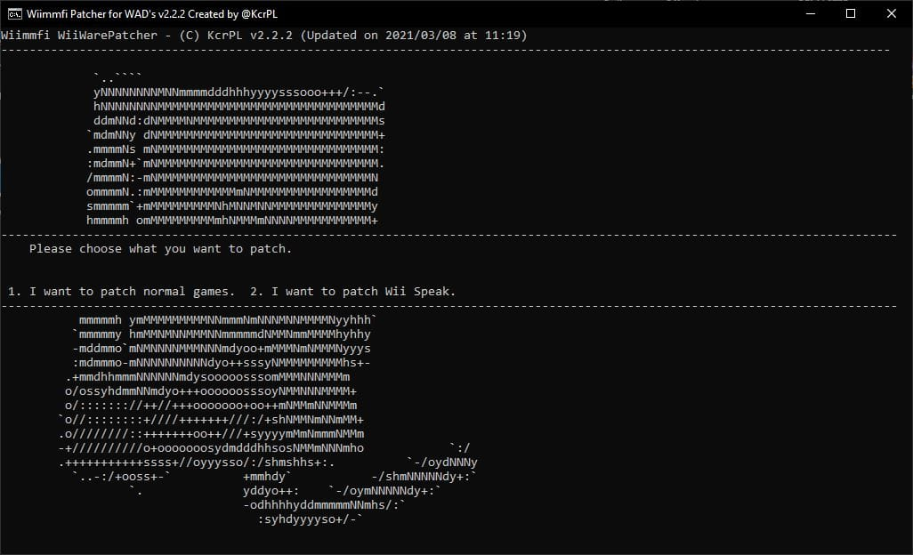
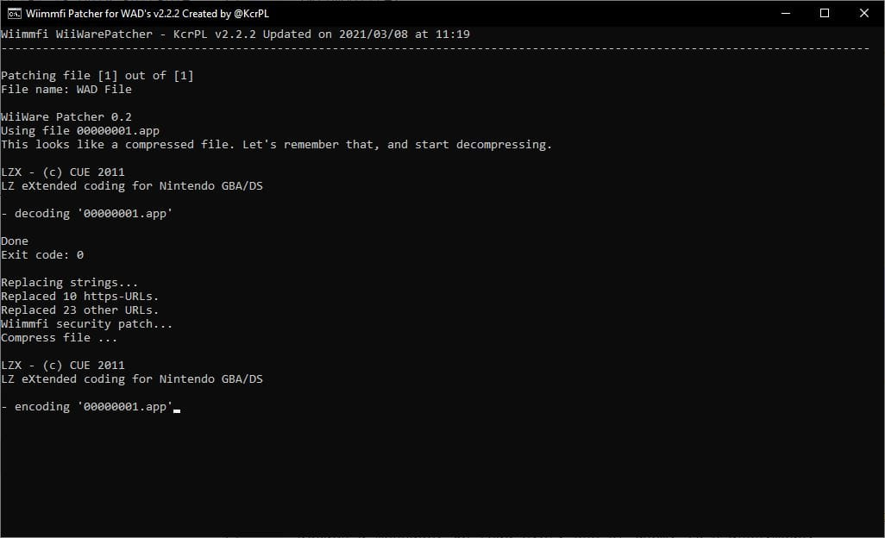

WiiWare Patcher
Si tienes problemas para seguir los pasos de esta guía, por favor solicita ayuda en nuestro servidor de Discord (recomendado), o envíanos un correo electrónico. Soporte disponible solo en inglés.
¿Desea parchear juegos WiiWare para jugar en Wiimmfi pero no sabes cómo hacerlo? En esta guía te explicaremos cómo usar WiiWare Patcher. (Esta guía sólo es apta para usuarios de Windows)

Esta guía es sólo para la versión de Windows de WiiWare Patcher.
Requisitos
- Una computadora con Windows
- WiiWare Patcher
Seccion I - Descargar el parcheador de WiiWare
- Haz clic en el enlace de arriba para ir a la página de RiiConnect24 Patcher en GitHub.
- Descarga
WiiWarePatcher.bat.
Sección I - Parcheando juegos de WiiWare
- En Windows, ejecuta
WiiWarePatcher.bat.  - Pulsa cualquier tecla para iniciar el parcheador.
- Selecciona si quieres parchear tus juegos o si quieres descargar y parchear el
Canal Wii Speak.  - Si estas parcheando tus propios juegos, copia los .WAD a la carpeta donde esta
WiiWarePatcher.bat, presiona1y puls ENTER. - El proceso de parcheado empezará. Tengan paciencia. 
- ¡Listo! ¡Listo! Patched WAD’s are in the
wiimmfi-wadsfolder. Instálalos con Wii Mod Lite u otro gestor de WADs.
Return to Wiimmfi installation page